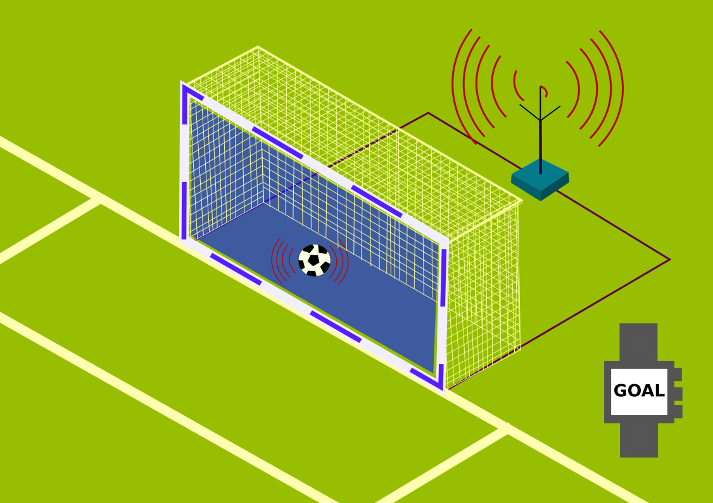

|
What is Hawk-Eye?
This question is strictly aimed at those born yesterday! Well not exactly, but there are scenarios where you’ve heard about it so much, but not really known what it actually meant. So do you know that Hawk-Eye has been bought by Sony and that it’s not officially used by the ICC? Yeah, it’s quite surprising, but that’s exactly what the official Hawk-Eye website says. Anyways, Hawk-Eye is a technology used in cricket which gives you a virtual understanding of the angle and distance of where a ball travels once it pitches. One very common use of Hawk-Eye are the LBW decisions, where the viewers can see the virtual future path of the ball after it’s being pitched and in conclusion get an idea of whether the batsman should actually have been adjudged LBW or not. The whole setup involves six high speed vision processing cameras along with two broadcast cameras. When a deliver is bowled, the position of the ball recorded in each camera is combined to form a “virtual” 3D positioning of the ball after its being delivered. The whole process of the delivery is broken into two parts, delivery to bounce and bounce to impact. Multiple frames of the ball position are measured and through this, you can calculate the direction, speed, swing and dip of that specific delivery. |
|
|  |
The International Football Association Board requires that goal-line technology does not interfere with the game, and as such only the match officials receive a signal on their watches to indicate whether the whole of the ball has crossed the goal line. This information is transmitted within one second, which ensures an immediate response from the referee and that there are no stoppages or other forms of interference in the game. The match officials are the only ones to receive a signal. Unless the competition organiser decides to show a replay, this information is only available to the match officials. What technologies are there?Camera-based: Several approved systems work with cameras that detect the ball and use software to evaluate the footage from all the cameras. In this way, the system can determine whether the whole of the ball has crossed the goal line. Currently licensed systems work with seven cameras per goal installed as high up as possible within the stadium structure. |
|
In cricket a bowling machine is a device which enables a batsman to practice (usually in the nets) and to hone specific skills through repetition of the ball being bowled at a certain length, line and speed. It can also be used when there is no-one available to bowl, or no one of the desired style or standard. There are a number of different types of bowling machine available to cricket coaches, each quite different in the ways they achieve the required delivery, though most allow the use of remote control, so that a coach can be closer to a batsman when the stroke is played. How they workThe main mechanism of the machine consists of two heavy wheels, between 30 and 50 cm in diameter, fitted with solid or pneumatic rubber tyres, each driven by its own electric motor. These are mounted in a frame such that the wheels are in the same plane, about 7 cm apart (slightly less than the diameter of a cricket ball). A ball joint allows the machine a wide range of movement. The whole assembly is mounted on a sturdy tripod or other frame so that the plane of the wheels is roughly at the height that a typical bowler would release the ball. A chute delivers the ball between the wheels, protecting the coach’s hands. |